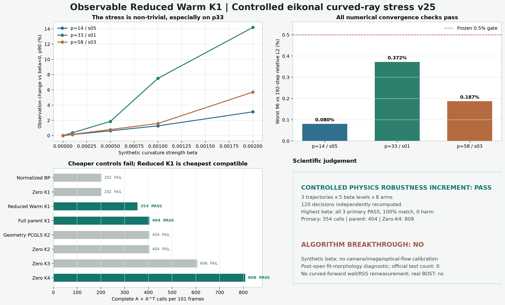

{kind=link}
严格判决
受控物理鲁棒性通过，突破性结论未成立
本轮回答的是“直线 forward 改成场依赖曲折光线后，固定 warm start 会不会立即失效”。答案是没有失效。它不回答真实相机、位移提取、标定误差和噪声下是否仍然成功。
PASS_CONTROLLED_CURVED_RAY_PROXY_STRESS_V25
三条轨迹 × 五个 beta × 八个方法全部完成；主方法在五档上都逐轨迹通过并保持最便宜兼容方法。
algorithm_breakthrough=false
post-open fit-morphology diagnostic=true，official test=0，real_BOST=false，physical_same_accuracy_proven=false，paper_success=false。

物理与数值
用场依赖 eikonal 光路替换直线观测
这一步来自师兄 BOS 模拟工具所使用的物理思想，但代码为重新实现，不包含私有 notebook。三轴 detector geometry 保持不变，只改变生成 observation 的正演。
dr/ds=t; dt/ds=(I-ttᵀ)grad(n)/n; n=1+beta(rho-mean(rho))
| 轨迹 | 曲率差 p50 | 曲率差 p90 | 曲率差 worst | 96/192 步 worst |
|---|---|---|---|---|
| p14-s05 | 2.253% | 3.113% | 5.307% | 0.080% |
| p33-s01 | 10.428% | 14.188% | 17.707% | 0.372% |
| p58-s03 | 3.758% | 5.705% | 8.257% | 0.187% |
重要限制：beta 不是实验标定量
它是控制非线性强度的 synthetic 参数。没有气体组分、波长与 Gladstone-Dale 常数，就不能把最大位移或 beta 数值解释成某台真实相机中的物理强度。
方法与调用
便宜经典对照失败，354 次主方法是最便宜兼容臂
表中“通过”要求全 101 帧和奇数 50 帧两套集合同时满足单侧非劣、harm 与 severe-harm 门。结果按三条轨迹取交集，不用平均值遮住失败。
| 方法 | A | Aᵀ | 总调用 | 三条最高 beta 共同判决 |
|---|---|---|---|---|
| Normalized BP | 101 | 101 | 202 | FAIL |
| Zero CGLS K1 | 101 | 101 | 202 | FAIL |
| Observable Reduced Warm K1 | 202 | 152 | 354 | PASS |
| Full parent Warm K1 | 202 | 202 | 404 | PASS |
| Zero CGLS K2 | 202 | 202 | 404 | FAIL |
| Geometry PCGLS K2 | 202 | 202 | 404 | FAIL |
| Zero CGLS K3 | 303 | 303 | 606 | FAIL |
| Zero CGLS K4 reference | 404 | 404 | 808 | PASS |
| 轨迹 | all-frame match | all-frame harm | field p90 比 | gradient p90 比 | observation p90 比 |
|---|---|---|---|---|---|
| p14-s05 | 101/101 | 0 | 1.0006 | 1.0044 | 0.9952 |
| p33-s01 | 101/101 | 0 | 1.0013 | 1.0020 | 0.9929 |
| p58-s03 | 101/101 | 0 | 1.0028 | 1.0023 | 0.9985 |
p90 比为 Reduced Warm K1 / Zero-K4。小于 1 表示更低，大于 1 仍需落在冻结兼容包络内；它不是“每个指标都更准”的声明。
独立核验
120 个判决重新计算，不接受 runner 自报
独立判决器不导入正式 runner，重新核对协议身份、数值门、两套帧集、调用账、兼容臂、严格支配关系和最高通过 beta。
判决复算通过
PASS_INDEPENDENT_DECISION_RECOMPUTATION_CURVED_RAY_STRESS_V25
3×5×8=120 个 arm decision 全部一致。
forward 回归通过
常场零偏折、仿射场独立积分参考、小 beta 极限、步长收敛和越界 fail-closed 均有测试。
数值门通过
三条轨迹 96/192 步最坏差为 0.080% / 0.372% / 0.187%，均低于 0.5%。
发现并固定数值陷阱
detector ray 若恰落在 cell-centred trilinear 导数不连续结点，小 beta 极限会不稳；正式 block-mean detector geometry 与回归测试已避开该人工对齐。
成功与失败
排除了一种失败解释，尚未跨过真实实验门
积极结果的独特价值在于：它把固定 warm start 放到不同于逆算子的场依赖光路上，证明优势并非立刻依赖“训练和测试完全共享直线 forward”。但当前还不能回答真实成像链。
确实成功
不重训、不调门，三条轨迹、五档压力全过；更便宜基线未过；数值与判决可复核。
没有证明
真实 rho-to-n、相机内外参、背景渲染、位移提取、噪声、重复测量、盲测、curved-forward wall/RSS。
突破性进展判定：否
这是一项有价值的正向科学增量，不是论文完成。决定性下一门是组内真实 BOST：用重复测量和标定不确定度定义同精度，再原样量三种方法的完整调用、wall 与全流程 RSS。
一级来源
为什么必须检查非线性光路
最新 BOS 误差分析把 thin phase object、均匀边界折射率、近轴和偏折垂直光轴四类假设放进同一框架；NeDF 与 NeRIF 则把非线性 ray tracing、稀疏视角和神经场直接接到 TBOS 重建。
统一 2D/3D 偏折估计假设，并以高保真非线性 ray tracing 作误差 ground truth。
稀疏视角 TBOS 的 neural deflection field，并使用高保真 nonlinear ray tracing 构造合成观测。
何远哲与 OERF 直接相关的神经折射率场重建主线。
本轮方法与资源优势的前置证据；v25 不重新测 wall/RSS，也不升级 v24 的资源主张。